3B
| Rear Differential Disassembly and Reassembly |
Disassembly
1)Remove rear drive coupling case bolts.
2)Using special tool, separate rear drive coupling case (1) from differential carrier (2).

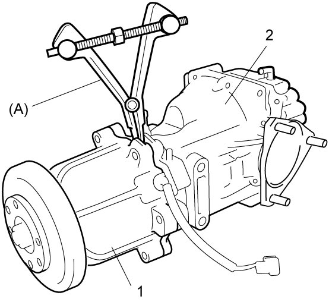
 "Expand image")
3)Hold companion flange with special tool and then remove companion flange nut.
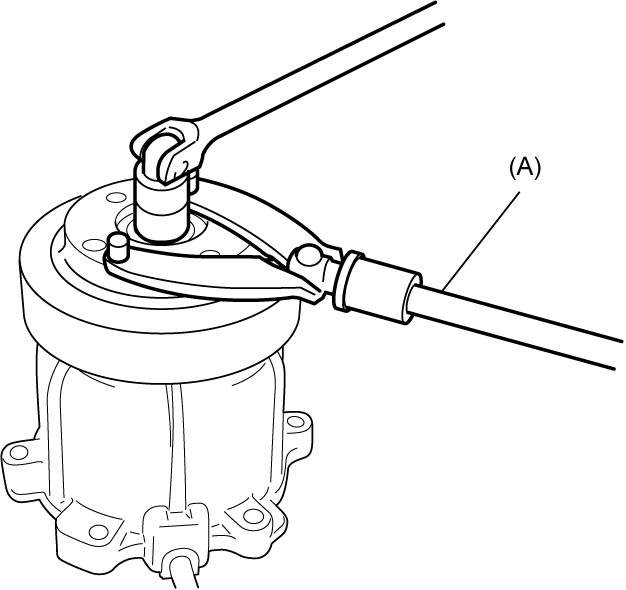
 "Expand image")
4)Remove companion flange (1) from pinion.
NOTE:
Use special tool if it is hard to remove.
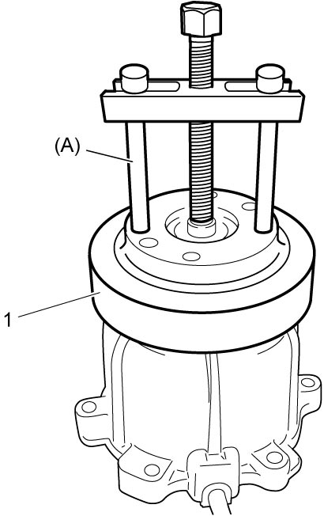
 "Expand image")
5)Using hydraulic press, remove rear drive coupling unit (1).
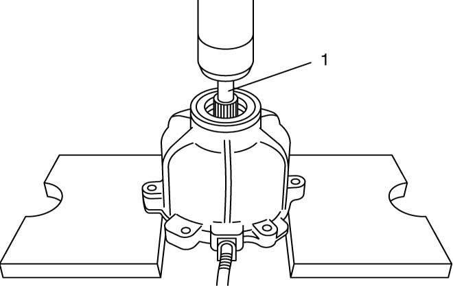
 "Expand image")
 "Expand image")
7)Using snap ring pliers, remove snap ring (1).
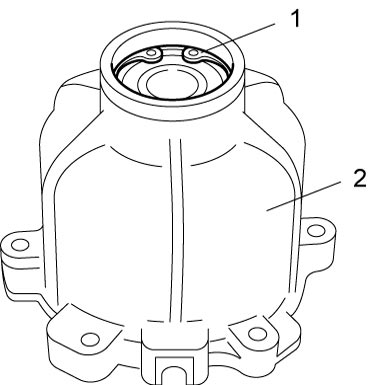
 "Expand image")
| 2. | Rear drive coupling case |
8)Using special tool and hydraulic press, remove rear drive coupling front bearing.
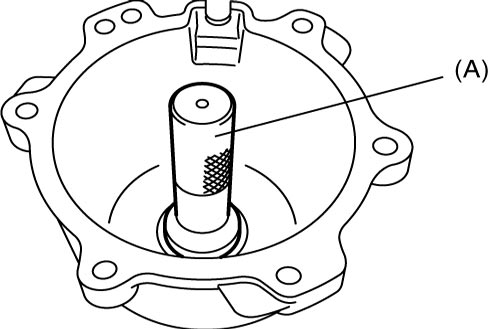
 "Expand image")
9)Install special tool to rear drive shaft flange (1) as shown, and tighten flange nut (2) to specified torque.
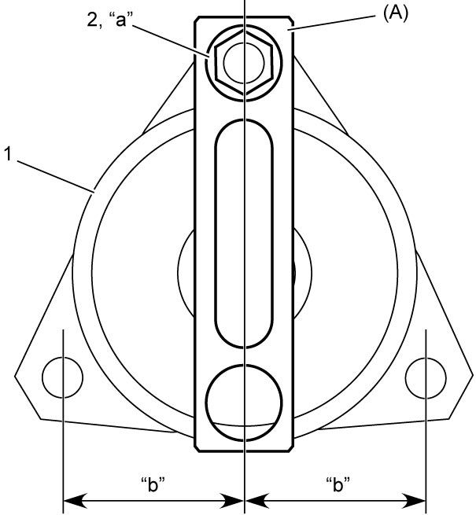
 "Expand image")
10)Using special tools, pull out rear drive shaft flange (1).
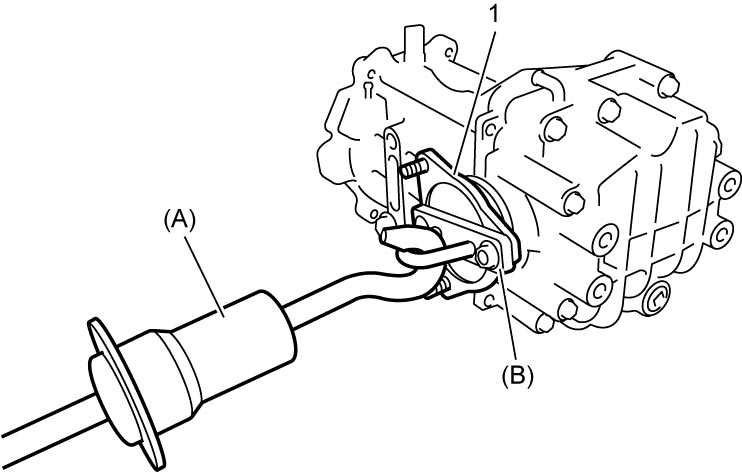
 "Expand image")
11)Using special tool, remove oil seals from rear differential (1).
NOTE:
It is also possible to remove oil seals after removing differential cover.
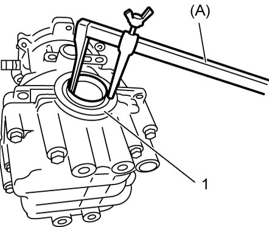
 "Expand image")
12)Remove differential cover bolts and using special tool, remove differential cover (1).
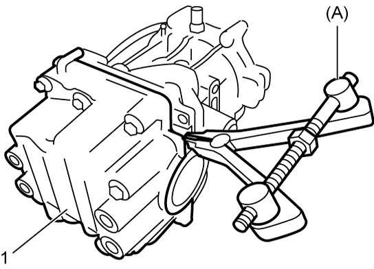
 "Expand image")
13)Remove differential cover plate from differential carrier.
14)Remove the following parts together from differential carrier (3):
•Differential case
•Differential side right bearing (2)
•Differential side left bearing (1)
•Differential side shim (4)
•Differential side right bearing (2)
•Differential side left bearing (1)
•Differential side shim (4)
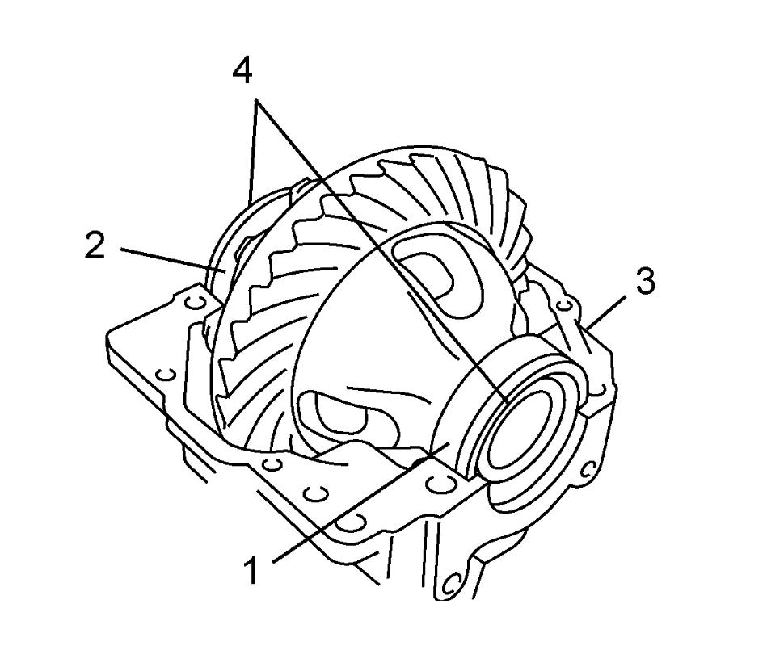
 "Expand image")
15)Using special tools, pull out differential side bearings (1).
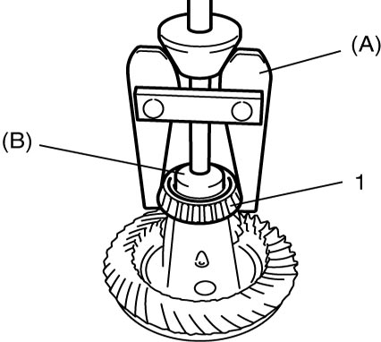
 "Expand image")
16)Using vise covered with aluminum plates (2), grip differential case and remove bevel gear (hypoid gear) (3).
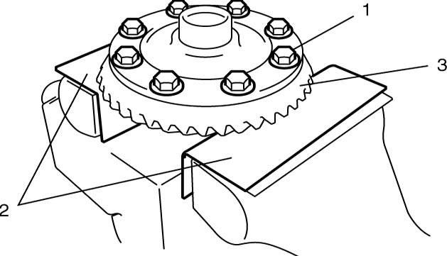
 "Expand image")
| 1. | Bevel gear bolts |
17)Remove pinion shaft pin with special tool and hammer.
18)Remove differential side gears (2), pinions (3), washers and shaft (4) from differential case (1).
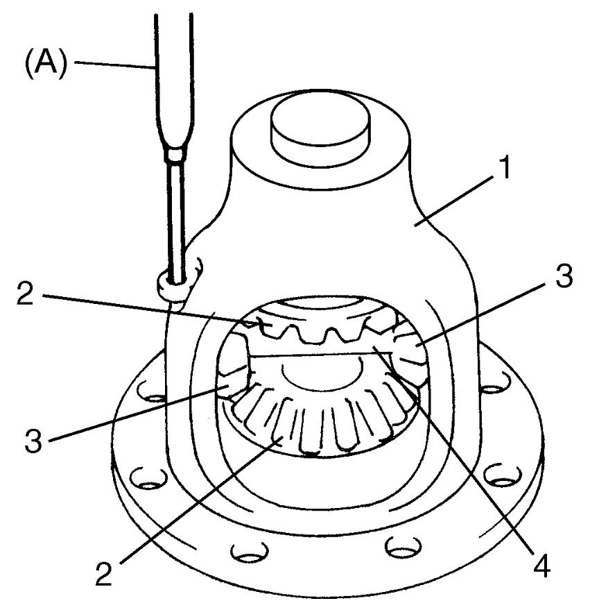
 "Expand image")
20)Remove the following parts from differential carrier (4):
•Bevel pinion (1)
•Bevel pinion spacer (2)
•Front bearing (3)
•Bevel pinion spacer (2)
•Front bearing (3)
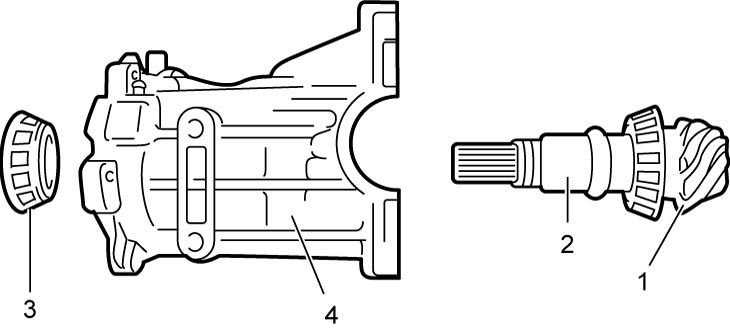
 "Expand image")
21)Using bearing puller (3) and hydraulic press, remove rear bearing (2) from bevel pinion (1).

 "Expand image")
22)Remove oil seal from differential carrier.
23)Using hammer and brass bar (1), remove bearing outer races (front (3) and rear (2)).
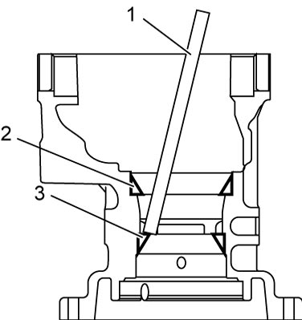
 "Expand image")
Reassembly
NOTICE:
Some parts are intended to be replaced as a set. If you replace these parts individually, rather than as a set, performance may be adversely affected.
Always replace the following parts as a set or in an assembly.
•Bevel gear and pinion
•Inner and outer races of a taper roller bearing
•Inner and outer races of a taper roller bearing
1)Using special tools and hydraulic press as shown in figure, press-fit bevel pinion bearing outer races to differential carrier (1).
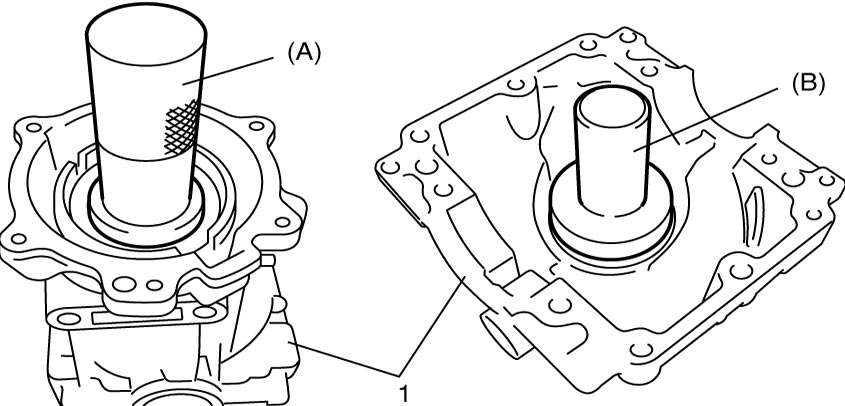
 "Expand image")
2)Select bevel pinion shim using the following procedure:
a)Apply differential oil to front bearing (2) and rear bearing (1).
b)Install front bearing, rear bearing and special tools (mounting dummy) to differential carrier (3).
(B): 09922–76420
(C): 09922–76330
(D): 09922–76340
(E): 09922–76150
(F): 09922–76530
NOTE:
Special tools (A) – (D) are included in differential adjuster set (09922–76110).
Special Tool
(A):
09922–76140 (B): 09922–76420
(C): 09922–76330
(D): 09922–76340
(E): 09922–76150
(F): 09922–76530
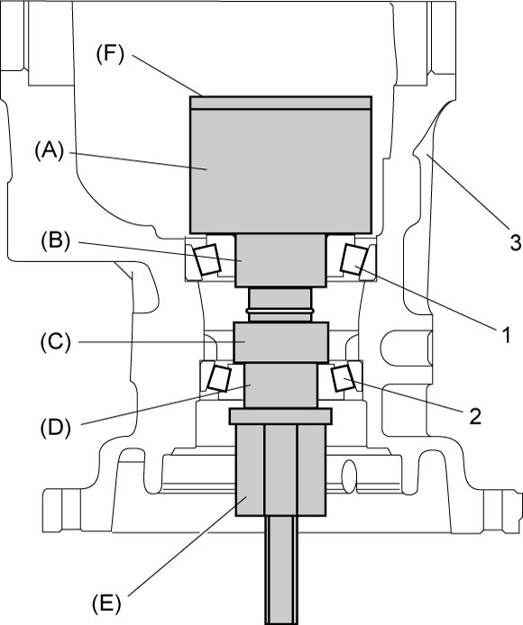
 "Expand image")
c)Tighten bevel pinion nut (special tool) so that specified bearing preload is obtained.
NOTE:
Before preload measurement with torque wrench, rotate special tool more than 15 revolutions by hand.
Bevel pinion bearing preload (special tool rotational torque)
1.3 – 2.6 N·m (0.13 – 0.27 kgf-m, 1.0 – 2.0 lbf-ft) (rotational speed about 50 rpm)
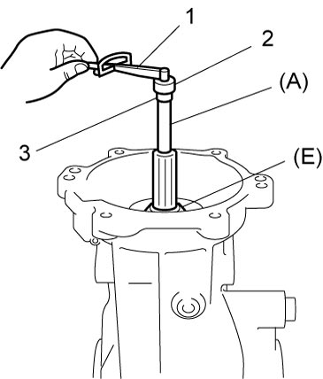
 "Expand image")
| 1. | Torque wrench | 3. | 10 mm (0.4 in.) socket |
| 2. | Adapter |
d)Set dial gauge to axle dummy and make 0 (zero) adjustment on surface plate (1).
NOTE:
•When setting dial gauge to mounting dummy (axle dummy), tighten screw lightly. Be careful not to overtighten it as this will cause damage to dial gauge.
•With dial gauge set, turn dummy back and forth by hand a couple of times and attain accurate 0 (zero) adjustment.
•It is desirable to have the short pointer indicate beyond 2 mm when long one is at 0 (zero).
•With dial gauge set, turn dummy back and forth by hand a couple of times and attain accurate 0 (zero) adjustment.
•It is desirable to have the short pointer indicate beyond 2 mm when long one is at 0 (zero).
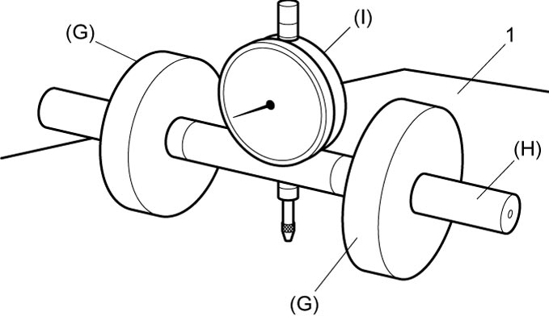
 "Expand image")
e)Place zero-adjusted axle dummy and dial gauge set on pinion dummy and take measurement between zero position and extended dial gauge measuring tip.
NOTE:
•Repeat turning back and forth of axle dummy and accurately measure distance as far as top surface of pinion dummy.
•When dial gauge measuring tip extends from 0 (zero) position, pointer turns counterclockwise.
•When dial gauge measuring tip extends from 0 (zero) position, pointer turns counterclockwise.
f)Dimensional relation of each dummy is as follows. Use the dial gauge reading to calculate the thickness of bevel pinion shim “g” with the formula.
“g” (mm) = “e” – “f”
“e”: “a” + “b” + “c” + “d”
“g” (mm) = “e” – “f”
“e”: “a” + “b” + “c” + “d”
•“a”: measured value (dial gauge reading)
•“b”: special tool (G) radius (31.00 mm (1.220 in.))
•“c”: special tool (A) height (40.00 mm (1.575 in.))
•“d”: special tool (F) height (9.00 mm (0.345 in.))
“f”: bevel pinion mounting distance (80.00 mm (3.150 in.))•“b”: special tool (G) radius (31.00 mm (1.220 in.))
•“c”: special tool (A) height (40.00 mm (1.575 in.))
•“d”: special tool (F) height (9.00 mm (0.345 in.))
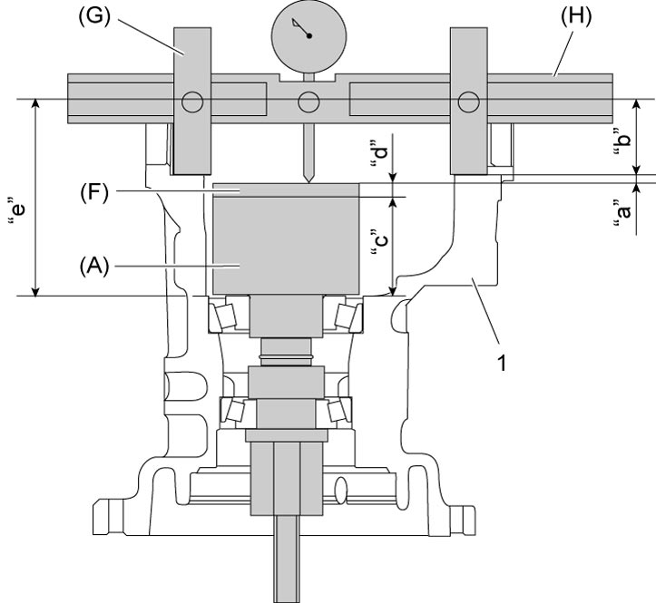
 "Expand image")
| 1. | Differential carrier |
g)Select bevel pinion shim that is closest in thickness to “g” (dial gauge reading) in Step f).
Available bevel pinion shim thickness
| Select shim | ||
|---|---|---|
| 0.30 mm (0.012 in.) | 0.87 mm (0.034 in.) | |
| 0.60 mm (0.023 in.) | 0.90 mm (0.035 in.) | |
| 0.63 mm (0.024 in.) | 0.93 mm (0.037 in.) | |
| 0.66 mm (0.026 in.) | 0.96 mm (0.038 in.) | |
| 0.69 mm (0.027 in.) | 0.99 mm (0.039 in.) | |
| 0.72 mm (0.028 in.) | 1.02 mm (0.040 in.) | |
| 0.75 mm (0.030 in.) | 1.05 mm (0.041 in.) | |
| 0.78 mm (0.031 in.) | 1.08 mm (0.043 in.) | |
| 0.81 mm (0.032 in.) | 1.11 mm (0.044 in.) | |
| 0.84 mm (0.033 in.) | ||
3)Install selected shim (1) and press-fit rear bearing (2) to bevel pinion (3) using special tools.
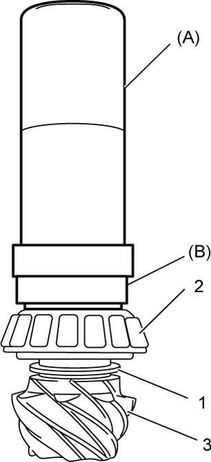
 "Expand image")
4)Apply differential oil to front bearing and rear bearing.
5)Install bevel pinion (1), new bevel pinion spacer (2) and front bearing (3) to differential carrier (4).
7)Using special tool and plastic hammer, install oil seal at the specified position in differential carrier (1).
Distance between differential carrier and oil seal
“a”: 0.5 – 1.5 mm (0.02 – 0.06 in.)
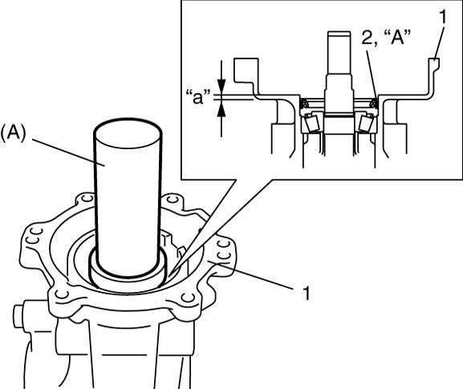
 "Expand image")
8)Tighten new bevel pinion nut (1) gradually with special tool to specified torque while turning bevel pinion. Set bearing preload of bevel pinion to specified rotation torque.
NOTICE:
The bevel pinion nut is precoated with adhesive. If an overtightened nut is loosened to specified torque and is used as it is, the nut may loosen.
Tighten the bevel pinion nut slowly and carefully while measuring the pinion preload, until the specified pinion preload is obtained. Never loosen the nut.
If the nut is overtightened, replace the spacer and nut and then tighten the nut.
NOTE:
•Before taking measurement with torque wrench (2), check for smooth rotation by turning bevel pinion for 15 revolutions or more by hand.
•Measure pinion bearing preload while turning bevel pinion about 50 rpm.
•Measure pinion bearing preload while turning bevel pinion about 50 rpm.
Bevel pinion bearing preload (Bevel pinion rotational torque)
1.3 – 2.6 N·m (0.13 – 0.27 kgf-m, 1.0 – 2.0 lbf-ft) (rotational speed about 50 rpm)
 "Expand image")
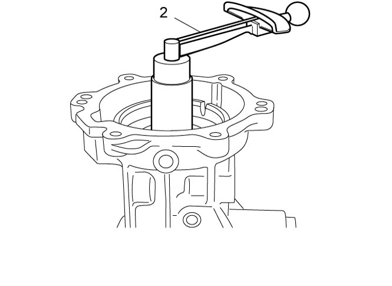
 "Expand image")
9)After applying differential oil to differential gears (4), pinions (5), pinion shaft (3), side washers (1), spring washers (7) and pinion washers (2), install them in differential case (6).
Install side washers and spring washers in specified direction, as shown in figure.
Install side washers and spring washers in specified direction, as shown in figure.
NOTE:
Used left and right differential side washers are not interchangeable.
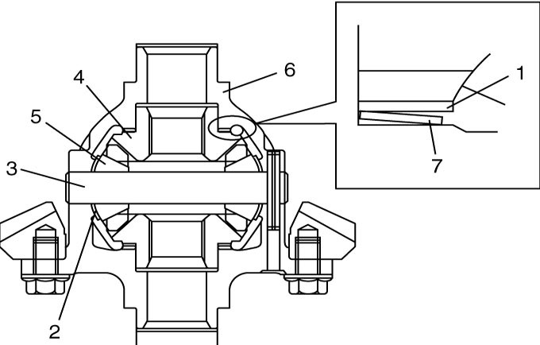
 "Expand image")
10)Check pinion (1) for smooth rotation.
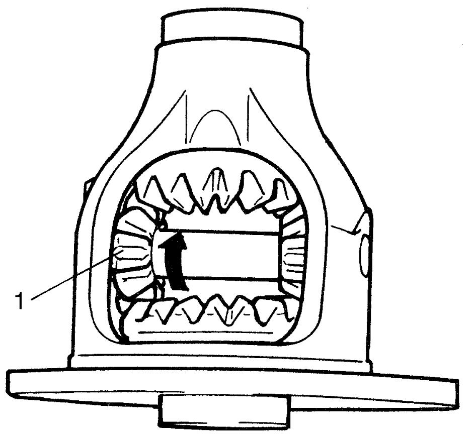
 "Expand image")
11)Align holes of pinion shaft and differential case and install new pinion shaft pin till they are flush with end surface of case.
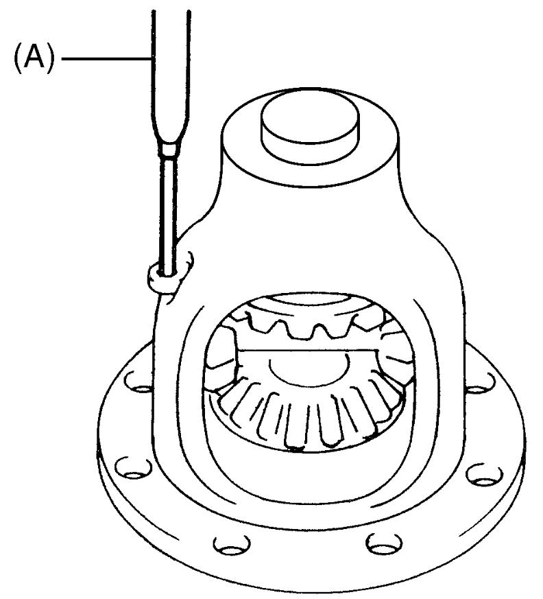
 "Expand image")
12)Measure differential gear (1) thrust play at upper side [A] and lower side [B]. If check result is not as specified range, select suitable side washer and replace it.
Then, measure differential side gear thrust play again.
Then, measure differential side gear thrust play again.
Differential side gear thrust play
0.00 – 0.37 mm (0.0 – 0.01 in.)
Available side washer thickness
| Select washer | |
|---|---|
| 0.90 mm (0.035 in.) | 1.10 mm (0.043 in.) |
| 0.95 mm (0.037 in.) | 1.15 mm (0.045 in.) |
| 1.00 mm (0.039 in.) | 1.20 mm (0.047 in.) |
| 1.05 mm (0.041 in.) | |
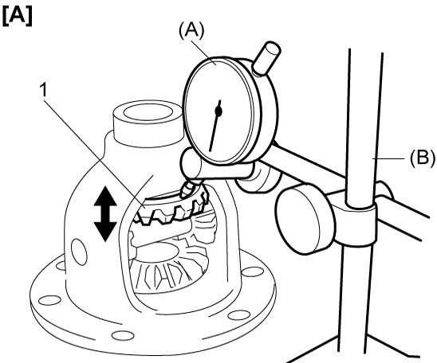
 "Expand image")
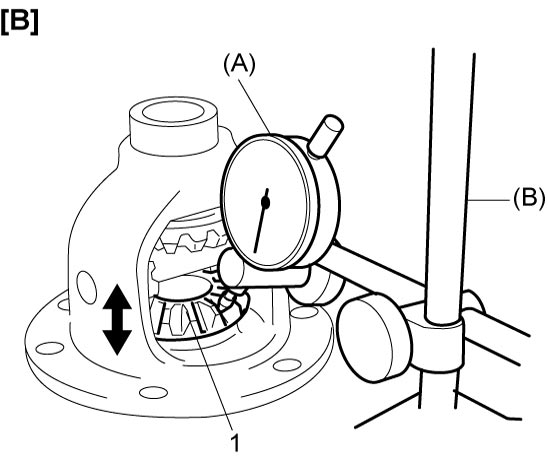
 "Expand image")
13)Put bevel gear (2) on differential case (3) and tighten them with new bolts (1) to specified torque.
NOTICE:
The bevel gear bolts are pre-coated with adhesive. If these bolts are reused, they may work loose.
Replace the bevel gear bolts with new ones whenever they are removed.
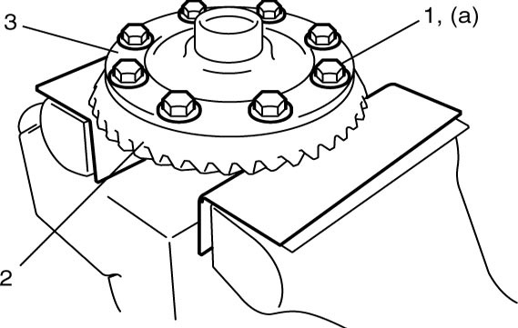
 "Expand image")
14)Press-fit differential right side bearing (1) using special tools and hydraulic press.
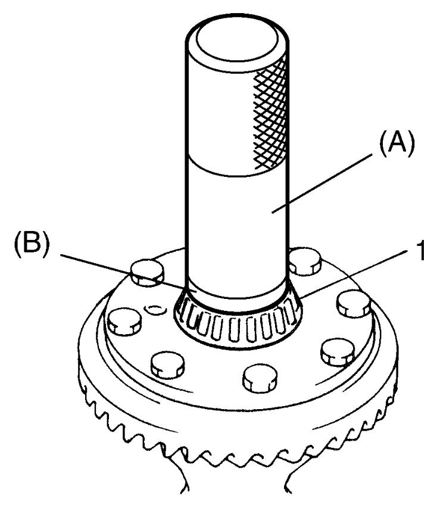
 "Expand image")
15)Hold differential right side bearing (2) with special tool to prevent bearing from damage and press-fit differential left side bearing (1) using special tools and hydraulic press.
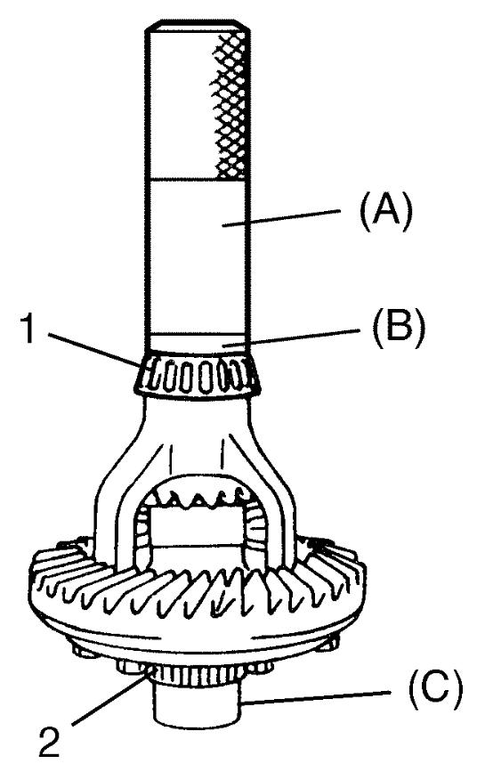
 "Expand image")
16)Select differential side shim using the following procedure:
a)Measure distance “a” between bearings (2) and (3).
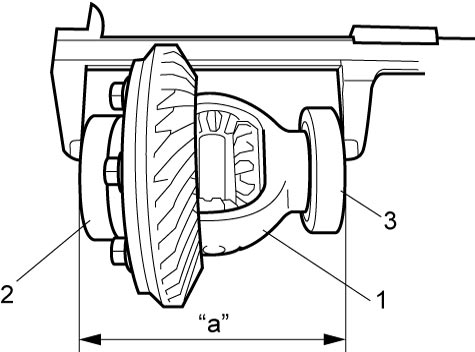
 "Expand image")
| 1. | Differential case |
b)Measure distance “b” of bearing retaining position in differential carrier (1).
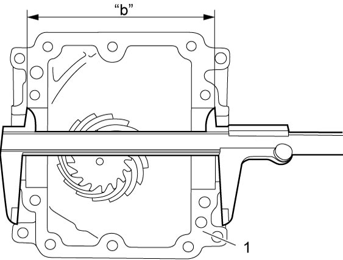
 "Expand image")
c)Calculate dimension for selecting shim.
Differential side shim thickness (mm (in.)) = “b” – “a”
Differential side shim thickness (mm (in.)) = “b” – “a”
d)Select a shim (4) which is close to half the thickness of the calculated value (necessary shim thickness) from the available shims to install it between the bearing and carrier (3) on the right and left sides.
Available differential side shim thickness
| Select shim | |
|---|---|
| 0.45 mm (0.017 in.) | 2.50 mm (0.098 in.) |
| 2.30 mm (0.090 in.) | 2.55 mm (0.100 in.) |
| 2.35 mm (0.092 in.) | 2.60 mm (0.102 in.) |
| 2.40 mm (0.094 in.) | 2.65 mm (0.104 in.) |
| 2.45 mm (0.096 in.) | 2.70 mm (0.106 in.) |
| 1. | Differential left side bearing | 2. | Differential right side bearing |
e)Install differential cover without applying sealant to matching surface of differential carrier and differential cover and then tighten differential cover bolts to specified torque.
f)Remove differential cover.
g)To measure bevel gear backlash, set dial gauge at right angle to bevel gear tooth, fix bevel pinion and read dial gauge while moving bevel gear.
If bevel gear backlash is out of specified range, adjust it by either changing thickness ratio or replacing parts.

If bevel gear backlash is out of specified range, adjust it by either changing thickness ratio or replacing parts.
NOTE:
•Apply measuring tip of dial gauge at right angles to convex side of tooth.
•Measure at least 4 points on bevel gear periphery.
•Measure at least 4 points on bevel gear periphery.
Bevel gear backlash
0.10 – 0.15 mm (0.004 – 0.006 in.)
 "Expand image")
h)Check gear tooth contact as follows:
i)After cleaning 10 bevel gear teeth, paint them with gear marking compound evenly with a brush (1) or sponge etc.
ii)Turn gear to bring its painted part in mesh with bevel pinion and turn it back and forth by hand to repeat their contact.
iii)Bring painted part up and check contact pattern, referring to the following table. If contact pattern is not normal, readjust or replace if necessary according to instructions in the table.
NOTE:
Be careful not to turn bevel gear more than one full revolution as it will hinder accuracy of check.
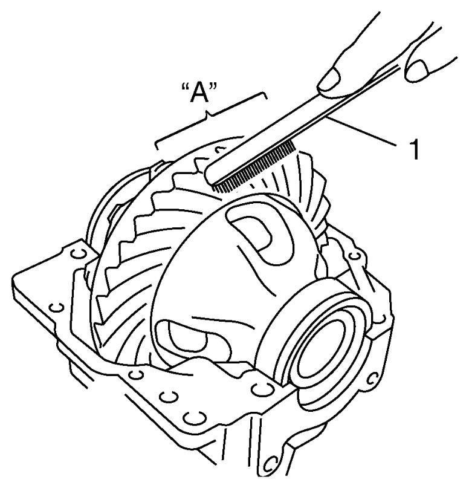
 "Expand image")
| “A”: | Paint gear marking compound evenly |
NOTE:
If bevel gear backlash and bevel pinion shims are adjusted properly, correct tooth contact should be provided. However, if correct tooth contact is not provided even when they are adjusted properly, there may be an abnormal condition in tooth, differential case or differential carrier. Check each component and replace if necessary.
| Tooth contact pattern | Diagnosis and remedy |
|---|---|
|
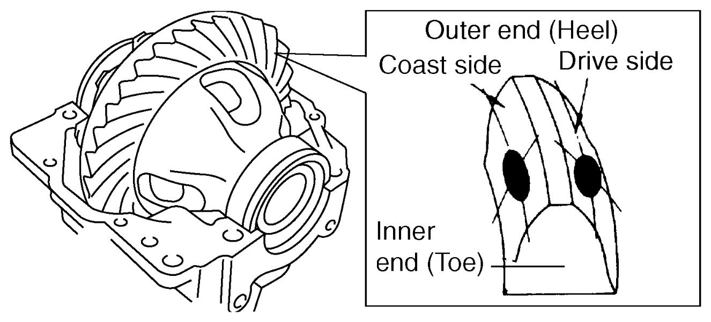
 "Expand image") |
Normal |
|
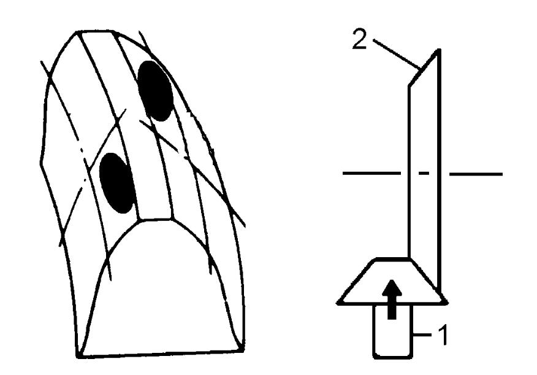
 "Expand image") |
High contact Pinion is positioned too far from the center of bevel gear (2).
•Increase thickness of pinion (1) height adjusting shim and position pinion closer to gear center.
•Adjust bevel gear backlash to specification. |
|
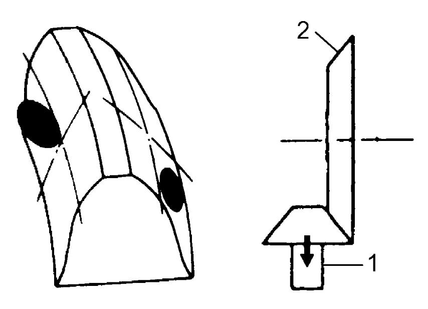
 "Expand image") |
Low contact Pinion is positioned too close to the center of bevel gear (2).
•Decrease thickness of pinion (1) height adjusting shim and position pinion farther from gear center.
•Adjust bevel gear backlash to specification. |
|
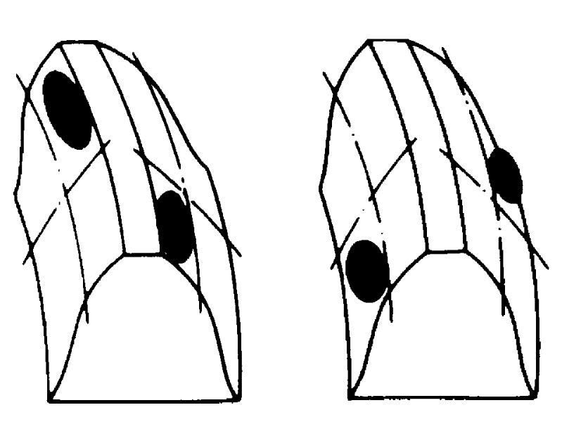
 "Expand image") |
Replace differential carrier if adjustment is impossible. |
|
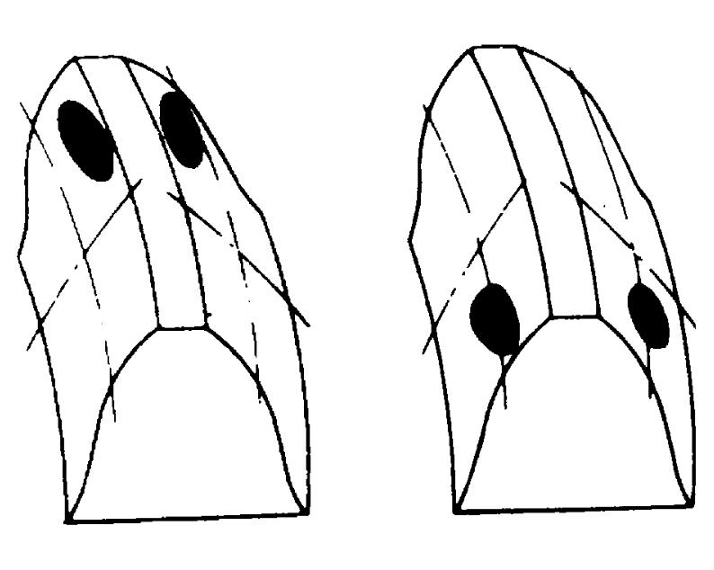
 "Expand image") |
•Check seating of bevel gear or differential case. (Check bevel gear for runout.)
•Replace bevel gear and pinion set or differential carrier if adjustment is impossible. |
|
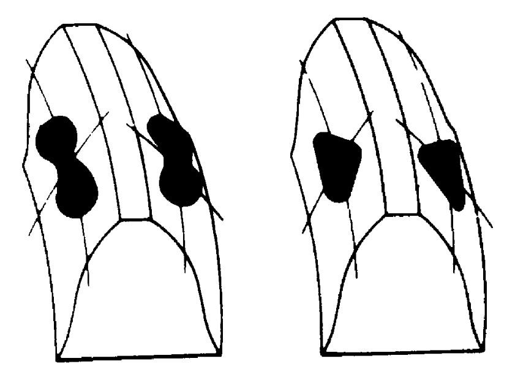
 "Expand image") |
Replace bevel gear and pinion set or differential case. |
i)Install differential cover and then tighten differential cover bolts to specified torque.
17)Calculate bevel pinion nut rotational torque. Increase thickness of differential side shim calculated in Step c) if it is under specification. Decrease thickness of differential side shim calculated in Step c) if it is over specification. Repeat from Step d).
NOTE:
Before preload measurement with torque wrench, rotate special tool more than 15 revolutions by hand.
Bevel pinion bearing preload (Bevel pinion rotational torque)
Preload measured in Step 8) +0.3 – 0.7 N·m (3 – 7 kgf-cm, 2.6 – 6.0 lb-in.) (rotational speed about 50 rpm)
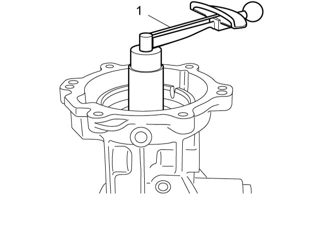
 "Expand image")
18)Remove differential cover and then install differential cover plate.
19)Clean mating surface of differential carrier (1) and differential cover, apply sealant to carrier as shown in figure by such amount that its section “a” is 1.5 mm (0.059 in.) in diameter. Mate differential cover with differential carrier, and then tighten bolts to specified torque.
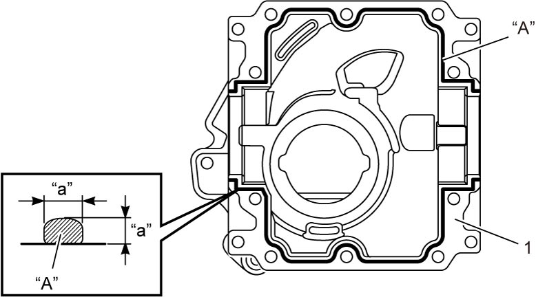
 "Expand image")
20)Using special tool and hydraulic press, install rear drive coupling front bearing.
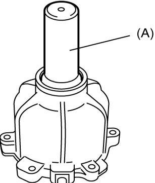
 "Expand image")
21)Using snap ring pliers, install new snap ring (1).
| 2. | Rear drive coupling case |
22)Apply grease to oil seal lip and using special tool, install oil seal (2) at the specified position in rear drive coupling case (1).
Check that oil seal is not at a tilt.
Check that oil seal is not at a tilt.
Distance between case and oil seal
“a”: 1.5 – 2.5 mm (0.06 – 0.10 in.)
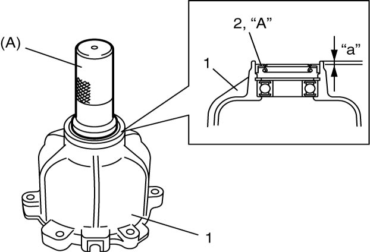
 "Expand image")
23)Install spacer (1) to rear drive coupling unit (2) as shown in figure.
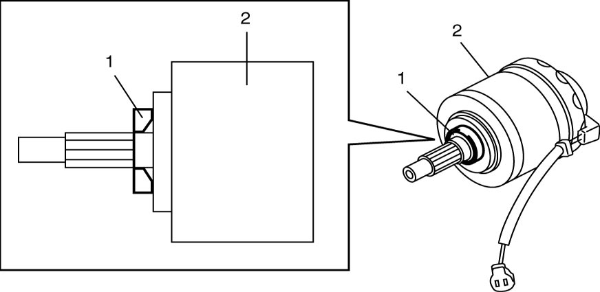
 "Expand image")
24)Install grommet (4) of rear drive coupling unit harness into groove (5) of rear drive coupling case (3), and using special tool and hydraulic press (1), install rear drive coupling unit (2).
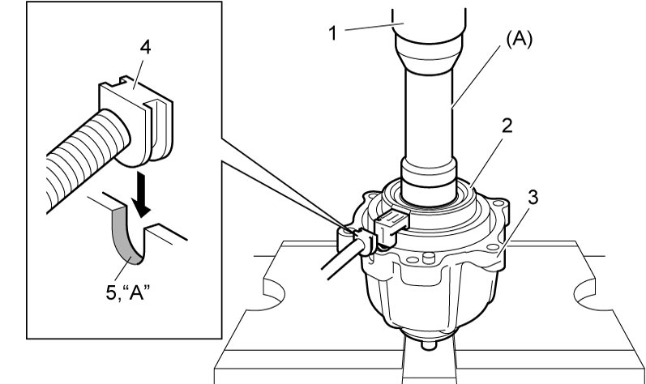
 "Expand image")
25)Install companion flange to rear drive coupling assembly, and then hold companion flange with special tool and tighten new companion flange nut to specified torque.
26)Check companion flange runout referring to “Companion Flange Runout” under Rear Differential Inspection.
27)Clean mating surface of differential carrier (1) and rear drive coupling case (2), and apply sealant to carrier as shown in figure by such amount that its section “a” is 1.5 mm (0.059 in.) in diameter. Mate rear drive coupling case with differential carrier by fitting rear drive coupling pin (3) to groove (4) of rear drive coupling case, and then tighten bolts (5) to specified torque.
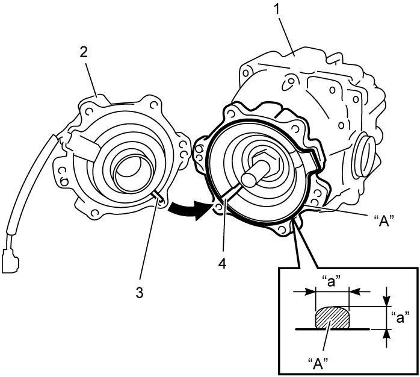
 "Expand image")
 "Expand image")
28)Install rear differential oil seals to rear differential case referring to “Installation” under Rear Differential Oil Seal Removal and Installation.
29)Install rear differential flange to differential after fitting new snap ring onto rear drive shaft flange.